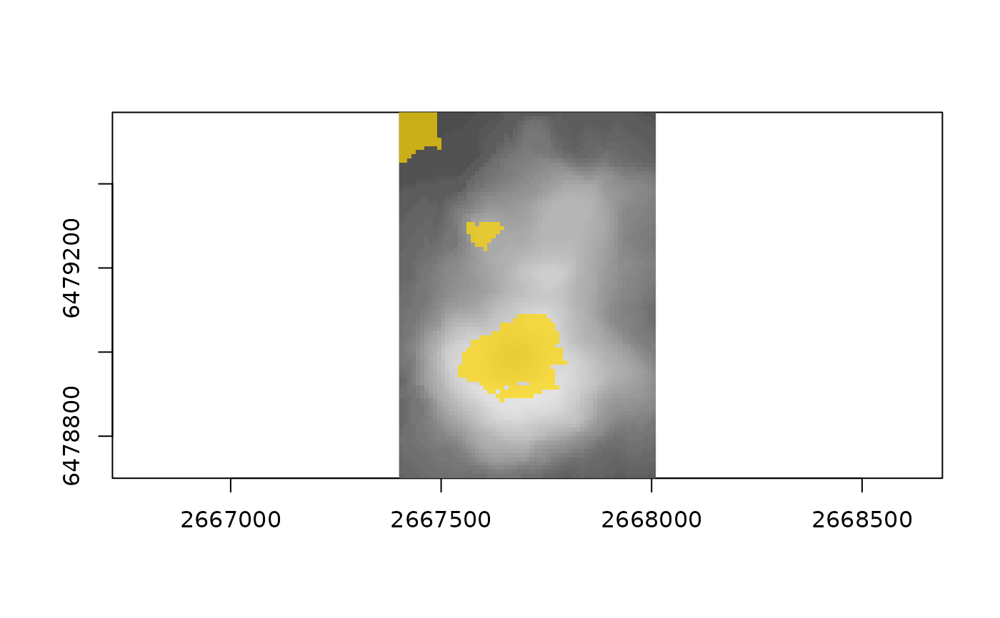

The ground visible from an eye at height eye above the terrain at xy, computed
exactly on the terrain as triangles (vertices at cell centres, each square of four
split on the diagonal from top-left to bottom-right).
Usage
viewshed(
z,
extent = NULL,
xy,
eye = 1.5,
far = NULL,
far_extent = NULL,
max_dist = Inf,
curvature = TRUE,
supersample = 2L,
pieces = TRUE,
sectors = 64L
)Arguments
- z
matrix of heights, row 1 at the north edge, square cells; or the result of
gdalraster::read_ds()(a vector with agisattribute), in which caseextentis taken from it- extent
c(xmin, xmax, ymin, ymax)ofz- xy
the eye,
c(x, y), insidez(inside the hull of its cell centres)- eye
height of the eye above the ground (m)
- far, far_extent
optional coarser grid surrounding
z(and its extent), for terrain further out; its cells that touchzare skipped- max_dist
ignore terrain further than this (m)
- curvature
lower the terrain by
d^2 / 2R(earth curvature with standard refraction, k = 0.13)- supersample
visible fraction per cell is sampled at
supersample^2points per cell (0 to skip)- pieces
keep the visible polygons
- sectors
sectors per 90 degree wedge (more: less bookkeeping per sector) Missing heights (sea, say) are treated as 0 m for the line of sight, so open water does not block the view, and are missing in
visible.
Value
a list with visible (matrix like z, fraction of each cell visible, for
ximage::ximage(v$visible, extent = v$extent)), extent, area (includes ground
that was missing in z)
(visible area, m^2, including far), skyline (data frame of azimuth, degrees
clockwise from grid north, and elevation of the horizon, degrees), pieces (data
frame of polygon vertices x, y with piece, triangle and ring ids),
eye (x, y, z of the eye) and counts. NULL if xy is outside z.
Details
The method is an object-space visibility map. Around the eye, four 90 degree wedges of azimuth each use the central (gnomonic) projection, in which straight edges stay straight. Triangles are visited front to back, and a horizon is kept per narrow sector of azimuth as an upper envelope. A triangle is visible exactly where it rises above the horizon, which it then raises. The visible pieces map back to the ground as convex polygons, and the horizon left at the end is the skyline.
Examples
## volcano, georeferenced (New Zealand Map Grid, EPSG:27200)
z <- volcano[nrow(volcano):1, ncol(volcano):1]
ex <- c(2667400, 2668010, 6478700, 6479570)
v <- viewshed(z, ex, c(2667700, 6478900))
v
#> <aspersions viewshed>
#> eye at (2667700.0, 6478900.0), height 193.5
#> visible: 40,660 m^2 from 875 of 10,320 triangles
#> 8.2% of the grid visible
#> 5468 visible pieces
#> skyline: -8.8 to 12.6 degrees
if (requireNamespace("ximage", quietly = TRUE)) {
ximage::ximage(z, extent = ex, col = grey.colors(64), asp = 1)
ximage::ximage(v$visible, extent = ex, add = TRUE,
col = c(NA, adjustcolor("gold", 0.7)), breaks = c(-1, 0.01, 2))
}
